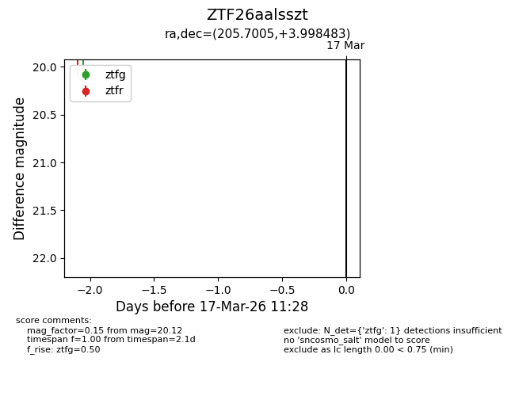
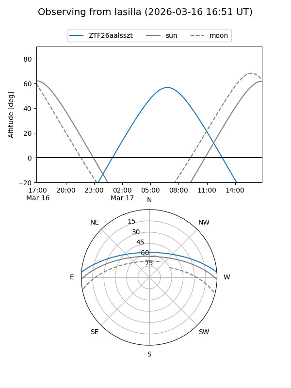
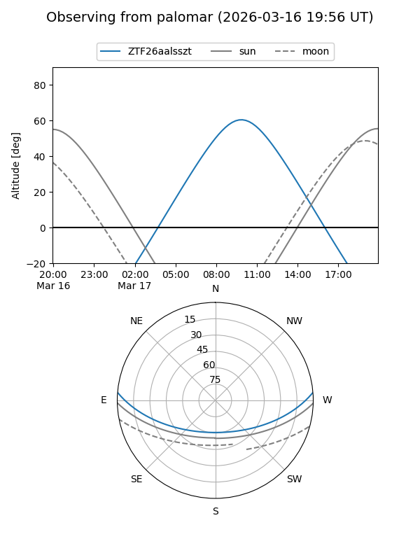

ZTF26aalsszt
Target ZTF26aalsszt at 2026-03-17 11:30
Aliases and brokers:
FINK: link
Lasair: link
ALeRCE: link
alt names
ZTF26aalsszt (ztf,fink_ztf)
Coordinates:
equatorial (ra, dec) = 205.7005,+3.99848
equatorial (HMS+DMS) = 13:42:48.11,+03:59:54.54
galactic (l, b) = (333.0985,+63.82016)
Flags:
Photometry:
last ztfg=20.12
1 ztfg detections
Lightcurve

Visibility


Additional plots